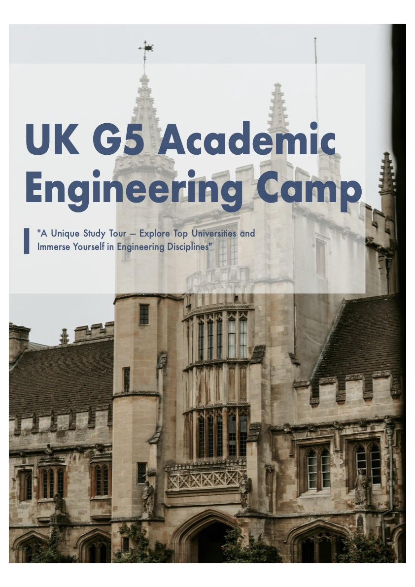
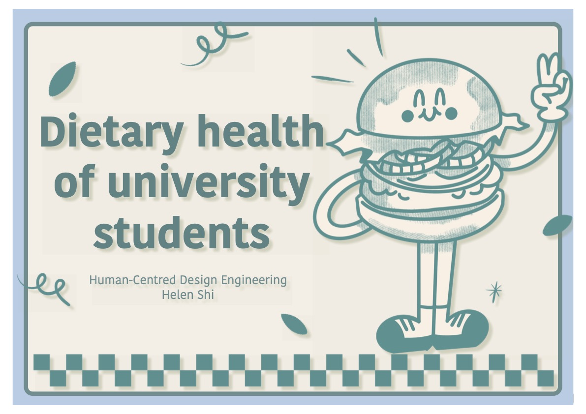
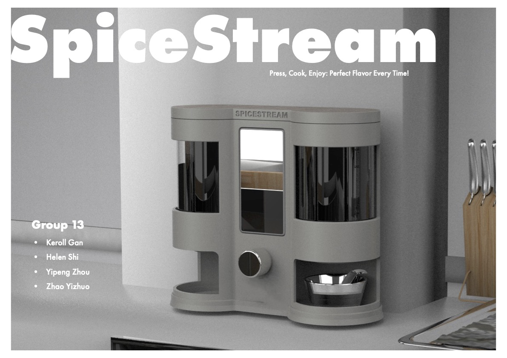

Hi!
I'm Helen Shi
A 2nd-year Design Engineering student
at Imperial College London
Here are three PDFs showcasing my work from 2024.

Brochure for the engineering camp (also responsible for projects planning and teaching sessions).

User Research and Concept Development

SpiceStream - Product Development